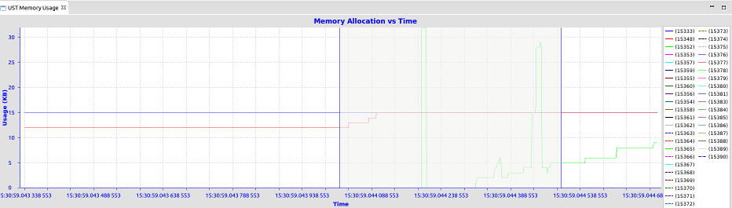
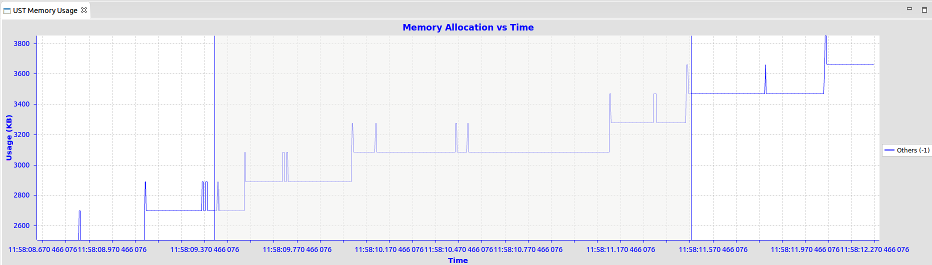

| LTTng-UST Analyses | ||
|---|---|---|
|
|
|
|
| LTTng Kernel Analysis | Trace synchronization | |
The Userspace traces are taken on an application level. With kernel traces, you know what events you will have as the domain is known and cloistered. Userspace traces can contain pretty much anything. Some analyses are offered if certain events are enabled.
The Call Stack view allows the user to visualize the call stack per thread over time, if the application and trace provide this information.
To open this view go in Window -> Show View -> Other... and select Tracing/Call Stack in the list. The view shows the call stack information for the currently selected trace. Conversely, you can select a trace and expand it in the Project Explorer then expand LTTng-UST CallStack Analysis (the trace must be loaded) and open Call Stack.
The table on the left-hand side of the view shows the threads and call stack. The function name, depth, entry and exit time and duration are shown for the call stack at the selected time.
Double-clicking on a function entry in the table will zoom the time graph to the selected function's range of execution.
The time graph on the right-hand side of the view shows the call stack state graphically over time. The function name is visible on each call stack event if size permits. The color of each call stack event is randomly assigned based on the function name, allowing for easy identification of repeated calls to the same function.
Clicking on the time graph will set the current time and consequently update the table with the current call stack information.
Shift-clicking on the time graph will select a time range. When the selection is a time range, the begin time is used to update the stack information.
Double-clicking on a call stack event will zoom the time graph to the selected function's range of execution.
Clicking the Select Next Event or Select Previous Event or using the left and right arrows will navigate to the next or previous call stack event, and select the function currently at the top of the call stack.
Clicking the
Import Mapping File (
 ) icon will open a file selection dialog, allowing you to import a text file containing mappings from function addresses to function names. If the callstack provider for the current trace type only provides function addresses, a mapping file will be required to get the function names in the view. See the following sections for an example with LTTng-UST traces.
) icon will open a file selection dialog, allowing you to import a text file containing mappings from function addresses to function names. If the callstack provider for the current trace type only provides function addresses, a mapping file will be required to get the function names in the view. See the following sections for an example with LTTng-UST traces.
There is support in the LTTng-UST integration plugin to display the callstack of applications traced with the liblttng-ust-cyg-profile.so library (see the liblttng-ust-cyg-profile man page for additional information). To do so, you need to:
lttng add-context -u -t vtid -t procname
LD_PRELOAD=/usr/lib/liblttng-ust-cyg-profile.so ./myprogram
Once you load the resulting trace, making sure it's set to the Common Trace Format - LTTng UST Trace type, the Callstack View should be populated with the relevant information. However, since GCC's cyg-profile instrumentation only provides function addresses, and not names, an additional step is required to get the function names showing in the view. The following section explains how to do so.
If you followed the steps in the previous section, you should have a Callstack View populated with function entries and exits. However, the view will display the function addresses instead of names in the intervals, which are not very useful by themselves. To get the actual function names, you need to:
nm myprogram > mapping.txt
) button in the Callstack View, and select the
mapping.txt file that was just created.
The view should now update to display the function names instead. Make sure the binary used for taking the trace is the one used for this step too (otherwise, there is a good chance of the addresses not being the same).
The Memory Usage view allows the user to visualize the active memory usage per thread over time, if the application and trace provide this information.
The view shows the memory consumption for the currently selected trace.
The time chart plots heap memory usage graphically over time. There is one line per process, unassigned memory usage is mapped to "Other".
In this implementation, the user needs to trace while hooking the liblttng-ust-libc-wrapper by running LD_PRELOAD=liblttng-ust-libc-wrapper.so <exename>. This will add tracepoints to memory allocation and freeing to the heap, NOT shared memory or stack usage. If the contexts vtid and procname are enabled, then the view will associate the heap usage to processes. As detailed earlier, to enable the contexts, see the Adding Contexts to Channels and Events of a Domain section. Or if using the command-line:
lttng add-context -u -t vtid -t procname
If thread information is available the view will look like this:

If thread information is not available it will look like this:

The view allows selection of a specific time by left-clicking on a point in the chart. Left mouse dragging will select a time range. Right mouse dragging on the area will zoom in on that window. Middle mouse dragging will move the display window. Mouse wheel operations will zoom in and out also.
Please note this view will not show shared memory or stack memory usage.
|
|

|
|
| LTTng Kernel Analysis | Trace synchronization |